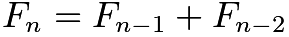

Intro to SLAB INK.
Welcome!
By Daniel Moges
Hello wonderful Shads! Welcome to the first edition of the Slab Daily. You might be wondering: “What is this paper before me?” “Why am I reading this?” “What is music night?” or even “Why is it called Slab?” Don’t worry—your questions will be answered!Our group, Slab Inc. (short for Slab Incorporation), brings you the Slab Daily—your source for news articles (also available on our website)—and the Slab Blab, our daily morning announcements. We’re here to keep you informed about everything happening at Shad, and to give you something fun to read whenever you have a moment.
We welcome your suggestions and feedback—feel free to share your thoughts with us! Slab Daily will be handed out each night, free for everyone. You don’t have to read it, but with puzzles, memes, reflections, and reader interaction, you might just find yourself coming back for more.
Please support and enjoy the paper!
Important Public Service Announcement
The Shad Plague: What to do About it?
By Wes Wilson
Some of y'all might have noticed that you or your friends have been feeling a bit under the weather recently. That would be due to none other than what I’ve dubbed the Shad Plague, which is probably some sort of cold or flu. It’s not too serious, but being sick isn’t fun and spreading contagions is, like, the least nonchalant thing you could do. So what should you do about it? If you’re feeling unwell, I’d recommend that you:
Coding Lecture
By Daniel Moges
The workshop on coding run by Paul Alves and Mariarosa Schiering, was a very entertaining exploration of both software and hardware. In the workshop we got to use Python to create effects in the real world, such as making a miniature lightshow accompanied by audio using the hub and making a small scale mobile vehicle create geometric shapes of our choosing on a physical paper. We used the Ti-Nspire to code on a handheld device, and learned how to utilize the unique console in order to create an output visible outside of the device. We spent some time trying to use the TI-Innovator hub to create music and colored flashes reminiscent of a traffic light.
We also used a TI-Rover to create a variety of shapes! By placing a marker through the vehicle, and creating a variety of regular polygons and some more unique shapes. From pentacontagons to hearts, the creativity on display was unparalleled. As someone who has had prior experience with Python, the workshop really helped to show how coding can manifest itself in engaging ways in the real world in a thought provoking manner.
A Little Adventure through Rec (Basketball)
By Michael Yang
The Choose Your Own Rec Session (CYO Rec) was one of the most anticipated rec sessions in shad and I would like to give you my experience in the basketball rec. We started off the rec by heading to St Jerome’s University, where they had a decent but claustrophobic-sized gym. It definitely didn’t feel like a full court. Joe commenced the rec session with a five minute warm-up to get the blood pumping.
Everybody was out there practicing shots on ten foot basketball hoops with chain nets. After warm up, we were told to line up for the game and split using the alternating 1-and-2 method. We played casual-rule competitive basketball. It was intense as Jonnathan and Dhruv made good competition, just like Lebron and Jordan. Next, we played bump, a game where two people shoot and if the second person gets the ball in before the first, the first is out. This went on until it was almost time to leave, and we had a do-your-own-thing cooldown until we left. The basketball rec was so fun and I hope everybody enjoyed their own rec as well!
Badminton
By Sae Janin
As most of you know, badminton was the highest in demand out of all the other options. Curious to know what it was like? With Kayvon, Lydia and Claire, we set out on a 10 min walk to the small gymnasium that was like a cage of humidity, we were already sweating before even starting! Before reaching the gymnasium we passed the gym which was actually surprisingly big with lots of kinds of weights and equipment. The building also looked relatively new and very well maintained.
The University of Waterloo seems to fund the sports section quite well. Then, we separated into two groups: one would play competitive, the other more chill. We played in pairs and switched every 5 min. At last, when we were heading back, most of us were still bubbling with energy, so we ran back to United! Or should I say more of a fast jog. It was truly great and it felt nice to sweat and move our bodies together as a team. Hopefully it went just as well in the others!
Salon Table: Crochet
By Demi Cen
Are you fascinated by geometric shapes? If so, don’t miss the crochet roundtable at Salon! What started as a cozy pastime during our camping nights has blossomed into a nightly tradition. Led by Susan, these crochet sessions offer more than just crafting—they’re a hands-on way to explore geometric forms, including complex shapes like hyperbolic surfaces.
Crocheting is the perfect way to relax your mind and stretch your fingers after a day of challenging math or physics. Susan’s handmade creations—from stylish hats to adorable crocheted cats and dogs—never fail to impress and delight.
If you missed a session, don’t worry—there are more to come! Bring your curiosity, and we’ll provide the yarn (and maybe a few surprise plushies).
SHAD NEWS
PA Seminars on Saturday!
The long-awaited coding workshop is finally here! Make sure your laptop is charged and ready to go for the entire day!
Person bitten 50+ times by mosquitoes during camping trip!
This story is developing! Stay tuned!
CLASSIFIED
SALON TABLE
Group solving COMC at salon tonight!
AD
Have an ad you want to show? Come talk to the SGN team!
Daily Question
The Fibonacci numbers are defined by and  for What is
Yesterday's answer: 15
SILLY MATH!
By Wes Wilson
Q: In a recent dig, a human skeleton was unearthed. It was later found that the amount of 14C in it had decayed to (1/√8) of its original amount. If 14C has a half life of 5760 years, how old was the skeleton?
(Hint: this is not a chemistry question, this is about exponential functions)
Answers coming next issue!
MUSIC REQS
By Wes Wilson
For the insomniacs:
For "people with taste", as said by Gabriel B:
For a fun inverse to that previous one:
For y'all who attend The Camp (iykyk):
For the Shads who want beats to study and relax to:
DAILY JOKES!
By Michael Yang
Q: What did pi say to i?
A: Get Real!
CONTACT US
Our Team:
Writers
Sae, Jesse, Daniel, Bridget, Namah, Demi, Wes
Editor
Michael
Video producers
Bridget, Auritro
Video Editors
Bridget, Demi, Auritrio
Code
Darren, Gabriel, Jesse, Michael
CEO
Colson